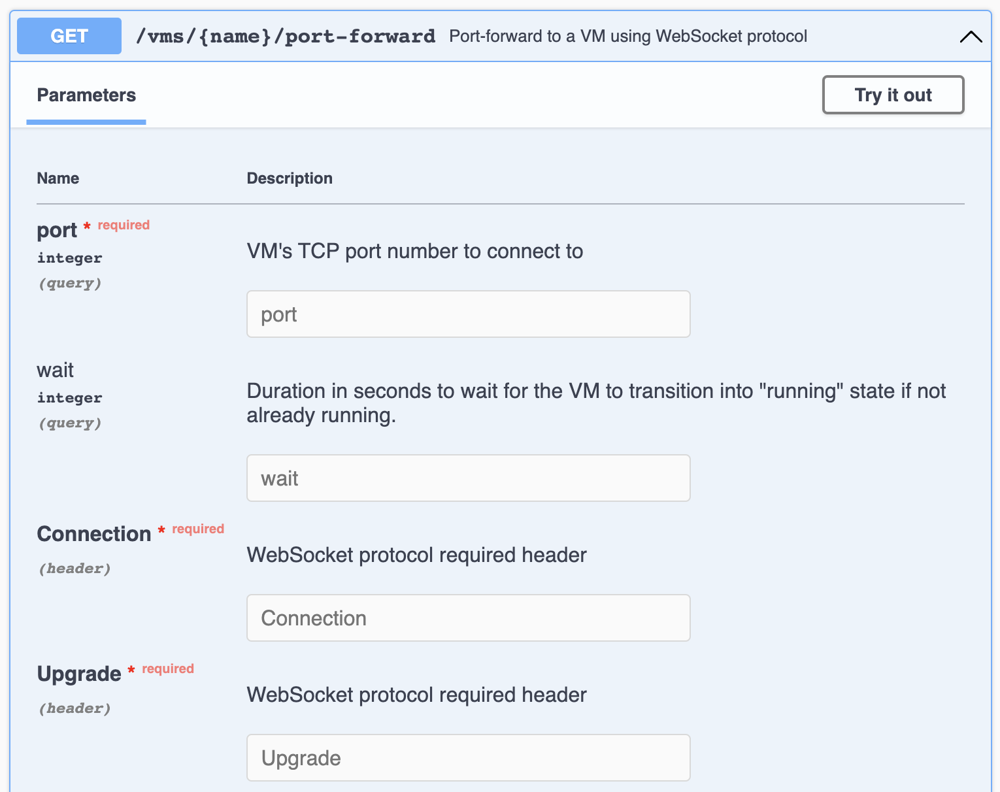

SSH over gRPC or how Orchard simplifies accessing VMs in private networks¶
We started developing Orchard, an orchestrator for Tart, with the requirement that it should allow users to access virtual machines running on worker nodes in private networks that users might not have access to.
At the same time, we wanted to enable users to access VMs on these remote workers just as easily as they’d access network services on their local Tart VMs.
While these features sound great on paper, they pose a technical problem: how do we connect to the remote workers, let alone VMs running on these workers, if we can’t assume that these workers will be easily reachable? And how do we establish an SSH connection with a VM running on a remote worker through all these hoops?
Implementing port forwarding: gRPC to the rescue¶
We need to keep a full-duplex connection with the controller for the port-forwarding to work, and the two obvious protocol options are:
- WebSocket API through a new controller’s REST API endpoint
- gRPC using
Content-Typedifferentiation
We’ve chosen the gRPC for controller ↔︎ worker connection, simply because it requires less code on our side and it will only be used internally, which means we don’t need to document it as extensively as our REST API. In essence, port forwarding is streaming of bytes of a connection in both ways, so gRPC streams looked like a natural solution. The resulting protocol is dead simple:
service Controller {
rpc Watch(google.protobuf.Empty) returns (stream WatchInstruction);
rpc PortForward(stream PortForwardData) returns (stream PortForwardData);
}
message WatchInstruction {
message PortForward {
string session = 1;
string vm_uid = 2;
uint32 vm_port = 3;
}
oneof action {
PortForward port_forward_action = 1;
}
}
message PortForwardData {
bytes data = 1;
}
On bootstrap, each Orchard worker establishes a Watch() RPC stream and waits for the PortForward instruction from the controller indefinitely. This long-running session might be used not just for port-forwarding, but for notifying the workers about changed resources, which results in workers picking up your VM for execution instantly.
Once PortForward instruction is received, the worker connects to the specified VM and port locally and opens a new PortForward() RPC stream with the controller, carrying the unique session identifier in the gRPC metadata to help distinguish several port forwarding requests.
We’re using a pretty ingenious Golang package that turns any gRPC stream into a net.Conn. This allows us to abstract from the gRPC details and simply proxy two net.Conns, thus providing the port forwarding functionality.
We’ve also initially considered using Yamux to only keep a single connection with each worker, however, that involves the burden of dealing with flow control and potential implementation bugs associated with it, so we’ve decided to simply open an additional connection for each port forwarding session and let the OS deal with it.
Building on top of the port-forwarding¶
First of all, we’ve made the new port-forwarding functionality available for integrations via the Orchard’s REST API:

All you need is to use a WebSocket client when accessing this endpoint to make it work.
Secondly, we’ve exposed three commands in the Orchard CLI that all use this endpoint:
orchard port-forward¶
Opens a TCP port locally and forwards everything sent to it to the specified VM (and vice versa).
For example, orchard port-forward vm sonoma-builder 2222:22 will forward traffic from the local TCP port 2222 to the ventura-builder VM’s TCP port 22.
orchard ssh¶
Connects to the specified VM on the default SSH port 22, optionally only launching a command (if specified), similarly to what the official OpenSSH client does.
For example, orchard ssh vm sonoma-builder will open an interactive session with the ventura-builder VM.
You can also send local scripts for execution by utilizing redirection:
orchard vnc¶
Establishes a port forwarding to the specified VM’s default VNC port 5900 and opens the default macOS Screen Sharing app.
For example, orchard vnc vm sonoma-builder will establish a port-forwarding to the ventura-builder VM's port 5900 under the hood and launch macOS Screen Sharing app.
Note that the SSH and VNC commands expect the VM resource to specify credentials in it’s definition (can be done via orchard create vm), and will otherwise fall back to the credentials specified by --username and --password, or if none specified — to de-facto standard of admin:admin credentials.
Conclusion¶
Overall, the technology described in this article somewhat resembles what we previously did for Cirrus Terminal. The only difference is that in Cirrus Terminal we carry terminal-specific characters, and in Orchard — we carry bytes for an arbitrary TCP connection.
We really hope this feature will be useful for many, just as the Cirrus Terminal, and that it will remove the pain of scaling Tart beyond a single machine.
You can give Orchard a try by running it locally in development mode on any Apple Silicon device:
This will launch a development cluster with a single worker on your machine. Refer to Orchard documentation on how to create your first virtual machine and access it.
Stay tuned and don’t hesitate to send us your feedback either on GitHub or Twitter!